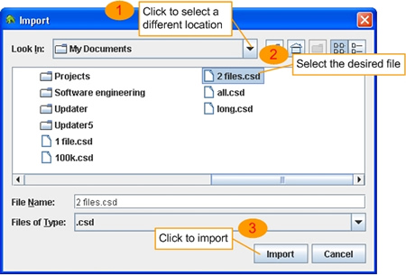

一つのCS デ�`タファイル（.csd）に含まれた���hファイルを�F在に�_けられたデ�`タベ�`スにインポ�`トすることができます。CS デ�`タファイルは CSSoft や CS-Bus で生成されて、一つ又は多数の���hファイルを含んでいます。この�C能を通して、その他のコンピュ�`タが入手した�y量��を�{べることができます。
インポ�`トを必要とする�龊稀�メニュ�`の「File -> Import Data（ファイル -> デ�`タのインポ�`ト）」を�x�kしてください。この�rに「Import ダイアログボックス」が表示されます。

わりに大きいファイルをインポ�`トする�龊稀⒑畏珠gを必要とする可能性があります。プログラムはインポ�`ト�Y果を表示します。成功にインポ�`トした後に、すべての当�� CS デ�`タファイルに含まれた���hファイルがインポ�`トされて、そして「Select Record File ダイアログボックス」に表示されます。